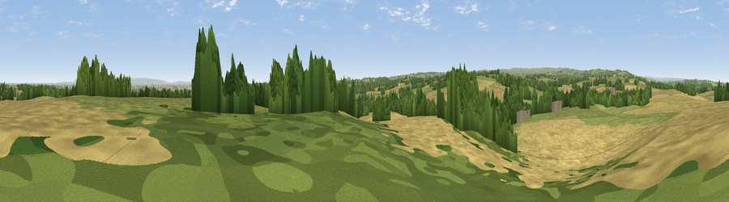

Viewpoint near Mickley
#17299 in England · top 39% of its area beats it · near Mickley · access?Where it is
The exact computed spot (SE 25725 77625). Click the marker for map links.
Public access: no public right of way or access land is recorded at this exact spot — it may be on private land. Computed from Natural England's CRoW access layer and OpenStreetMap rights of way — not the legal definitive map. Always verify locally.
The view, rendered

A 360° render of this exact spot computed from the terrain model, tree cover and land cover — summer colours, afternoon light, calibrated against photographs of famous viewpoints. Real trees, hedges and buildings will differ in detail.
The panorama
Grey silhouette: terrain skyline in each direction (720 bearings, Earth curvature and refraction included). Dashed green: skyline with trees (+15 m) and buildings (+8 m) as obstacles. Blue strip: how far the ground is visible on each bearing.
Where the view opens
Wedge length = distance to the farthest visible ground on that bearing (vegetation-aware). Rings at 10, 25 and 50 km.
What fills the view
39% grassland · 23% cropland · 20% woodland · 17% water ·
Angular shares of the visible panorama (visual magnitude), not map area. Landscape diversity 0.59 (0–1 Shannon).
Key numbers
More beautiful places nearby
The staircase of upgrades: each row has a higher view potential than everything closer. Driving times are estimates from straight-line distance, calibrated against real road routing — check an actual route before setting out.
| Place | Direction | Drive | Score |
|---|---|---|---|
| Viewpoint near Grewelthorpe | W · 3 km | ~6 min | 62.6 |
| Viewpoint near Grewelthorpe | W · 3 km | ~7 min | 73.9 |
| Viewpoint near East Witton | WNW · 14 km | ~25 min | 77.8 |
| Viewpoint near Kirby Knowle | ENE · 22 km | ~37 min | 80.5 |
| Viewpoint near Thirlby | ENE · 26 km | ~41 min | 81.5 |
| Beacon Hill | NE · 30 km | ~47 min | 84.7 |
| Carlton Bank | NE · 36 km | ~55 min | 85.1 |
| Roseberry Topping | NE · 47 km | ~68 min | 85.8 |
54.19375, -1.60722 · source: screening · position refined by local search. Computed location — check access rights before visiting.